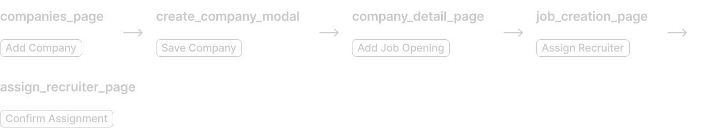
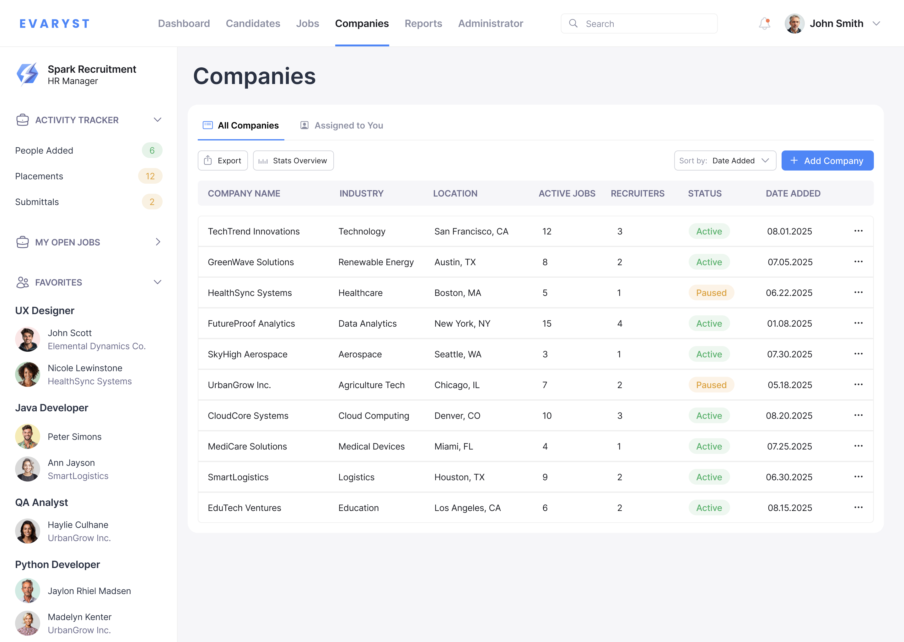
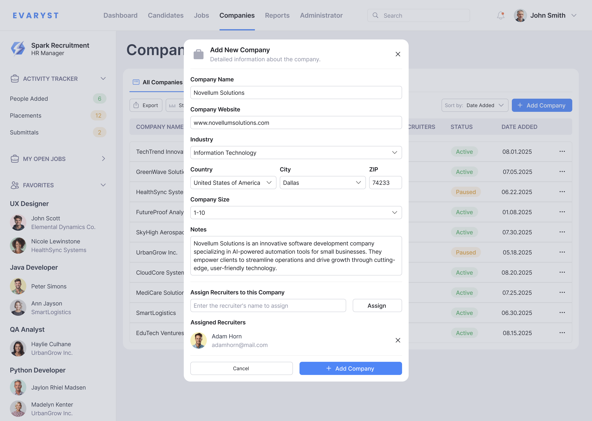
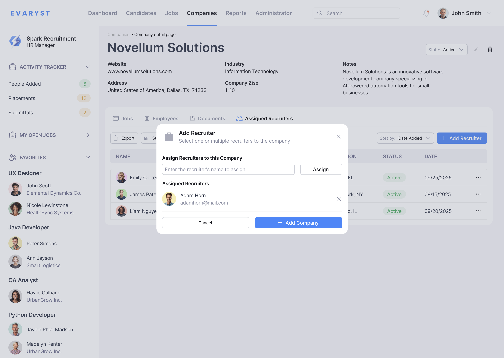
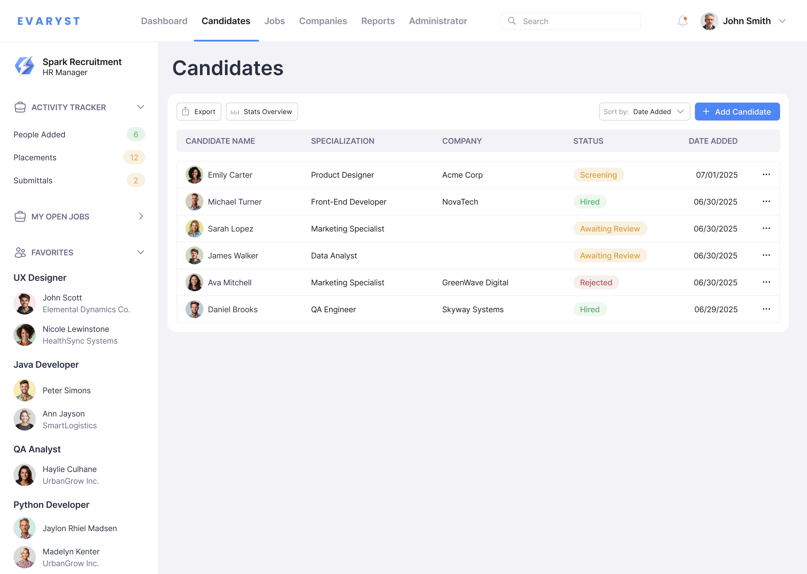

Evaryst
Evaryst is an applicant tracking system designed to bring structure and clarity to the hiring process. I redesigned the core workflows to help recruiting teams manage accounts, balance workload, and add candidates faster and with fewer errors.

Problem
Recruiters lack a clear system to manage accounts, track workload, and quickly add new candidates. Because these tasks are scattered across different tools, teams often lose visibility, duplicate efforts, and slow down the hiring pipeline.
Solution
The core ATS experience was redesigned to streamline two essential recruiter tasks: assigning companies to the right team members and capturing new candidates through manual entry or resume import. This created clearer ownership across the team and ensured the hiring pipeline stays complete and up to date.
Main JTBD and flows
1. Create and assign companies to recruiters for streamlining organizational structure and controlling who manages which accounts.
Companies Page
Add New Company
Company Details Page

Assign Recruiter
Main JTBD and flows
2. Create and assign companies to recruiters for streamlining organizational structure and controlling who manages which accounts.
Candidates list page
Add Candidate

Impact
Improved the structure of recruiting operations, making it easier for managers to maintain accountability and distribute workloads.
Accelerated early-stage hiring by simplifying resume import and manual candidate creation.
Overall system usability improved (feedback from internal team tests)
Challenges & Learnings
Building the product from scratch meant we had limited user data, so we relied on insights from our internal recruiting team, early usability tests, and competitive analysis of tools like Greenhouse. Using the Jobs to Be Done framework helped us justify our decisions and ensure each feature addressed a real recruiter need rather than internal assumptions.